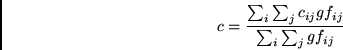
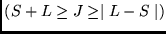

Next: printw
Up: Utility programs
Previous: lsreduce
Contents
This program produces a file plot.dat which,
for each radial function not deleted
by entering d or D in response to the electron
label, contains a header line followed by
pairs of numbers corresponding to  and
. This file contains data suitable for plotting.
By tabulating the radial function versus , more
detail is provided near the origin and extended exponential
tails are compressed. The program can easily be changed.
2001-10-11